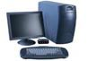
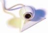

我们的顾问团队
我们提供最全面的产品咨询服务
 您可以利用网络、电缆或外部驱动器，使用“文件和设置转移向导”将旧电脑中的所有项目复制到新电脑中。 通过网络或电缆转移文件和设置如果您购买了新的电脑，并可以同时运行新旧两台电脑，那么您可以使用家庭 网络或电缆来转移文件和设置。 若要使用家庭网络，请将新旧两台电脑同时连接至家庭网络。 如果不能将两 台电脑同时连接至家庭网络，请利用一根 Null 调制解调器串行电缆（大多数电子商店都有售）连接两台电脑 的串行端口。 这一过程应当需要大约一个小时。
 在 Windows 系统中，再细微的操作都可随意设置。当你的电脑锁屏时，会自动显示一张你设置好的图片 作为屏保。当你登录电脑或打开单个应用之前，可在锁屏界面看到你自定义的信息提示。你还可以将图片 设为开机密码，无需再费力敲击键盘，只要在设定好的图片上画几笔就能轻松登录电脑。无论是在狗狗的脸 上涂几笔，或者在孩子的鼻子上点3下，密码手势随你设置。